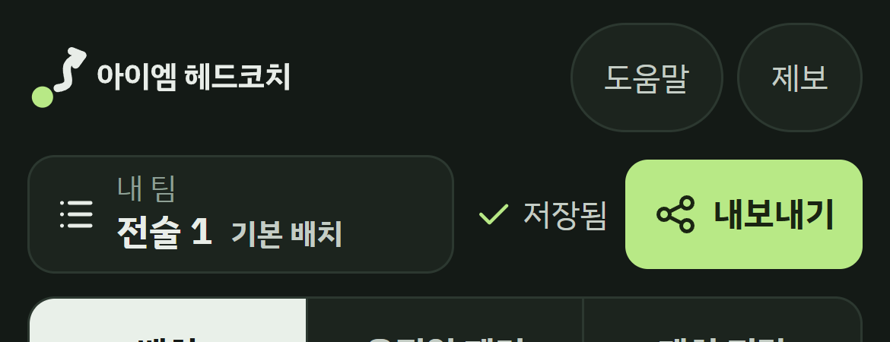
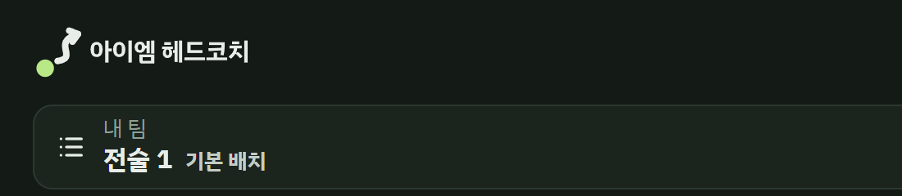
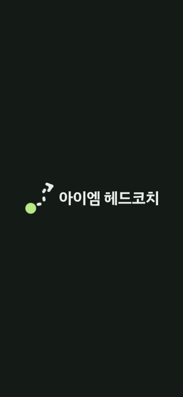
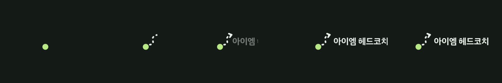
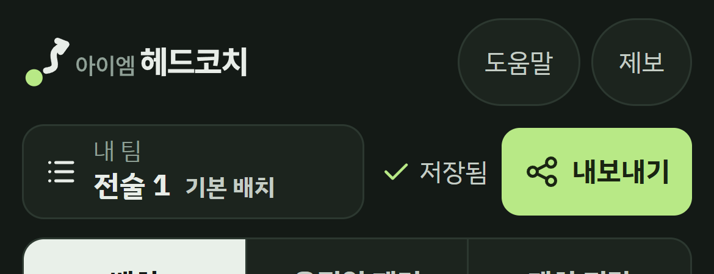
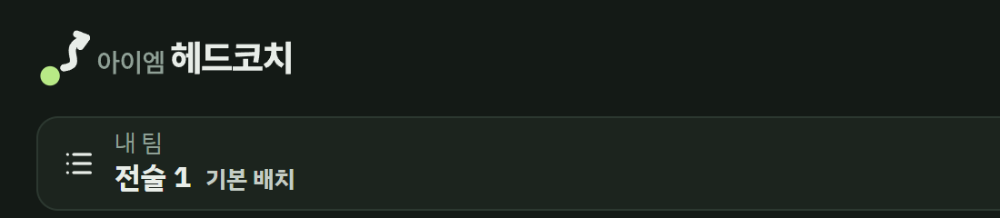
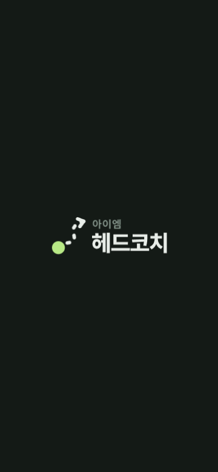
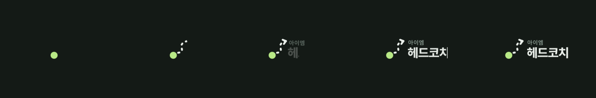
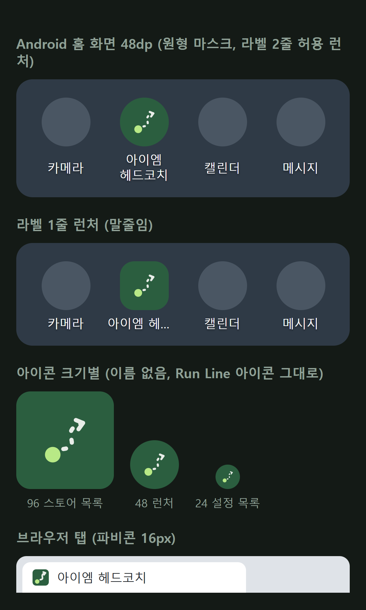
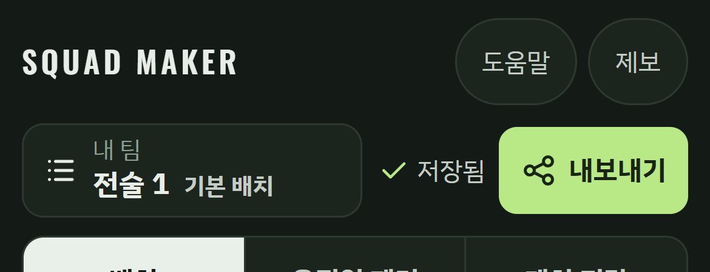

<title>아이엠 헤드코치 브랜드 시안</title>
<link rel="stylesheet" href="https://fonts.googleapis.com/css2?family=IBM+Plex+Sans+KR:wght@400;500;700&display=swap">
<style>
  /* Layout: a two-column A/B review board on the app's own night-pitch surface; columns stack under 860px. */
  :root {
    --night: #141a16;      /* app background */
    --panel: #1a221d;      /* raised surface */
    --line: #2b352f;       /* hairline */
    --chalk: #e8ede8;      /* primary text */
    --muted: #9aaa9f;      /* secondary text (6.9:1 on night) */
    --lime: #b8e986;       /* the one accent, same role as the Run Line token */
    --pitch: #2b5e3f;
    --font: 'IBM Plex Sans KR', 'Malgun Gothic', 'Apple SD Gothic Neo', 'Noto Sans KR', sans-serif;
    --step-0: 0.9375rem; --step-1: 1.125rem; --step-2: 1.5rem; --step-3: 2.125rem;
    color-scheme: dark;
  }
  body { background: var(--night); color: var(--chalk); font: 400 var(--step-0)/1.65 var(--font); word-break: keep-all; overflow-wrap: anywhere; }
  .page { max-width: 1180px; margin: 0 auto; padding-inline: 20px; padding-block: 40px 72px; display: grid; gap: 56px; }
  h1, h2, h3 { line-height: 1.25; text-wrap: balance; margin: 0; }
  h1 { font-size: var(--step-3); font-weight: 700; letter-spacing: -0.01em; }
  h2 { font-size: var(--step-2); font-weight: 700; }
  h3 { font-size: var(--step-1); font-weight: 700; }
  p { margin: 0; max-width: 68ch; }
  .lede { color: var(--muted); font-size: var(--step-1); }
  .stack { display: grid; gap: 14px; }
  .meta { display: flex; flex-wrap: wrap; gap: 8px; }
  .chip { border: 1px solid var(--line); border-radius: 999px; padding: 4px 12px; font-size: 0.8125rem; color: var(--muted); }
  .chip.on { border-color: var(--lime); color: var(--lime); }
  .cols { display: grid; grid-template-columns: 1fr 1fr; gap: 28px; }
  @media (max-width: 860px) { .cols { grid-template-columns: 1fr; } }
  .col { min-width: 0; display: grid; gap: 22px; align-content: start; }
  .col > header { display: grid; gap: 6px; padding-bottom: 14px; border-bottom: 1px solid var(--line); }
  .tag { font-size: 0.8125rem; font-weight: 700; letter-spacing: 0.08em; color: var(--lime); }
  figure { margin: 0; display: grid; gap: 8px; min-width: 0; }
  figcaption { font-size: 0.8125rem; color: var(--muted); }
  .shot { border: 1px solid var(--line); border-radius: 12px; overflow: hidden; background: var(--night); }
  .shot img { display: block; width: 100%; height: auto; }
  .sizes { display: grid; gap: 14px; padding: 18px; border: 1px solid var(--line); border-radius: 12px; }
  .sizes div { display: flex; align-items: center; gap: 14px; min-width: 0; }
  .sizes span { width: 44px; flex: none; font-size: 0.75rem; color: var(--muted); font-variant-numeric: tabular-nums; }
  .sizes img { max-width: calc(100% - 58px); width: auto; }
  .pair { display: grid; grid-template-columns: 1fr 1fr; gap: 14px; }
  .phone { max-width: 260px; }
  .table-wrap { overflow-x: auto; border: 1px solid var(--line); border-radius: 12px; }
  table { border-collapse: collapse; width: 100%; min-width: 620px; font-size: 0.875rem; }
  th, td { text-align: left; vertical-align: top; padding: 12px 14px; border-bottom: 1px solid var(--line); }
  tr:last-child td { border-bottom: 0; }
  th { color: var(--muted); font-weight: 500; }
  td strong { color: var(--chalk); }
  a { color: var(--lime); }
  a:focus-visible { outline: 2px solid var(--lime); outline-offset: 2px; }
  ul { margin: 0; padding-left: 1.2em; display: grid; gap: 6px; max-width: 72ch; }
  .note { border-left: 3px solid var(--lime); padding: 4px 0 4px 14px; color: var(--chalk); }
  .wide { display: grid; grid-template-columns: minmax(0, 360px) 1fr; gap: 28px; align-items: start; }
  @media (max-width: 760px) { .wide { grid-template-columns: 1fr; } }
</style>

<main class="page">
  <section class="stack">
    <div class="meta"><span class="chip on">A안 선택</span><span class="chip">2026-10-10</span><span class="chip">국내 상표 확인 전</span></div>
    <h1>아이엠 헤드코치 브랜드 시안</h1>
    <p class="lede">Run Line 마크(선수 토큰, 점선 런 라인, 화살촉)와 나이트피치 색은 그대로 두고, 영문 <b>SQUAD MAKER</b> 워드마크만 한글 <b>아이엠 헤드코치</b>로 바꾼 두 안입니다. 앱 기능과 화면 구조는 바꾸지 않습니다.</p>
    <p>헤더 이미지는 현재 <code>main</code> 앱(27a34ca)을 실제로 띄워 좌상단 로고 자리에만 시안을 넣고 찍었습니다. 휴대폰 390px(3배 해상도)와 데스크톱 1280px입니다. 워드마크는 모두 글꼴 없이 그리는 아웃라인 경로라 Android 번들에서도 같은 모양으로 보입니다.</p>
  </section>

  <section class="cols" aria-label="두 시안 비교">
    <article class="col" id="a">
      <header>
        <span class="tag">A안 · 최소 변경 · 선택됨</span>
        <h2>글자만 한글로 바꾼 Run Line</h2>
        <p>마크, 간격, 크기 규칙, 모션까지 Run Line 사양을 그대로 따르고 영문 글자 자리에 한 줄 한글을 넣었습니다. 글꼴은 앱이 이미 쓰는 IBM Plex Sans KR Bold라 새로 추가되는 글꼴이 없습니다.</p>
      </header>
      <figure><div class="shot"></div><figcaption>모바일 헤더 28px. 한글 글자 높이 약 12px</figcaption></figure>
      <figure><div class="shot"></div><figcaption>데스크톱 헤더 32px (1280px 화면의 왼쪽 550px)</figcaption></figure>
      <div class="sizes" aria-label="A안 로고 크기별">
        <div><span>28px</span></div>
        <div><span>40px</span></div>
        <div><span>64px</span></div>
      </div>
      <div class="pair">
        <figure><div class="shot phone"></div><figcaption>인트로 마지막 화면 (360×780)</figcaption></figure>
        <figure><div class="shot phone"></div><figcaption>인트로 모션 1.4초</figcaption></figure>
      </div>
      <figure><div class="shot"></div><figcaption>0.2초, 0.6초, 1.1초, 1.25초, 끝</figcaption></figure>
    </article>

    <article class="col" id="b">
      <header>
        <span class="tag">B안 · 한글 배치 개선</span>
        <h2>‘헤드코치’를 앞세운 2단 무게</h2>
        <p>‘아이엠’은 작고 차분한 보조 글자로, ‘헤드코치’는 굵고 크게 둡니다. 작은 헤더에서도 이름의 핵심이 읽히고, 인트로와 스플래시에서는 두 줄로 쌓아 마크와 높이를 맞춥니다. 글꼴은 Pretendard SemiBold와 ExtraBold입니다.</p>
      </header>
      <figure><div class="shot"></div><figcaption>모바일 헤더 28px. ‘헤드코치’ 약 16px, ‘아이엠’ 약 11px</figcaption></figure>
      <figure><div class="shot"></div><figcaption>데스크톱 헤더 32px (1280px 화면의 왼쪽 550px)</figcaption></figure>
      <div class="sizes" aria-label="B안 로고 크기별">
        <div><span>28px</span></div>
        <div><span>40px</span></div>
        <div><span>64px</span></div>
      </div>
      <div class="pair">
        <figure><div class="shot phone"></div><figcaption>인트로 마지막 화면 (360×780)</figcaption></figure>
        <figure><div class="shot phone"></div><figcaption>인트로 모션 1.4초</figcaption></figure>
      </div>
      <figure><div class="shot"></div><figcaption>0.2초, 0.6초, 1.1초, 1.25초, 끝</figcaption></figure>
    </article>
  </section>

  <section class="stack">
    <h2>두 안의 차이</h2>
    <div class="table-wrap">
      <table>
        <thead><tr><th>기준</th><th>A안 · 최소 변경</th><th>B안 · 한글 배치 개선</th></tr></thead>
        <tbody>
          <tr><td>바뀌는 것</td><td>워드마크 글자만</td><td>워드마크 글자와 글자 배치(크기 2단, 두 줄 로고 추가)</td></tr>
          <tr><td>모바일 헤더 판독</td><td>글자 높이 약 12px. 옆 버튼 글자(약 14px)보다 작아 로고가 덜 보임</td><td><strong>‘헤드코치’ 약 16px</strong>로 앱 안 제목 글자와 같은 무게</td></tr>
          <tr><td>스플래시·인트로</td><td>한 줄. 360px 폭에서 좌우가 넓게 퍼짐</td><td>두 줄. 마크 높이와 글자 덩어리가 맞아 가운데가 단단함</td></tr>
          <tr><td>글꼴</td><td>IBM Plex Sans KR Bold. 앱에 이미 있음</td><td>Pretendard 2종. 로고는 아웃라인이라 앱에 글꼴을 싣지 않아도 됨</td></tr>
          <tr><td>가로 폭 (헤더 28px)</td><td>약 116px</td><td>약 124px</td></tr>
          <tr><td>위험</td><td>작은 크기에서 영문 로고보다 약해 보일 수 있음</td><td>‘아이엠’이 작아 이름 전체가 한 덩어리로 덜 읽힐 수 있음</td></tr>
        </tbody>
      </table>
    </div>
  </section>

  <section class="stack">
    <h2>두 안 공통: 아이콘·파비콘·시스템 스플래시</h2>
    <div class="wide">
      <figure><div class="shot"></div><figcaption>실제 크기 확인 (360dp, 3배 해상도)</figcaption></figure>
      <div class="stack">
        <p>아이콘에는 이름을 넣지 않았습니다. 피치 녹색 바탕의 Run Line 마크를 두 안 모두 그대로 씁니다. 파비콘과 시스템 스플래시(배경색만 있는 화면)도 바뀌지 않습니다.</p>
        <p class="note">런처 라벨은 확인이 필요합니다. 라벨을 한 줄로 자르는 런처에서는 ‘아이엠 헤…’로 보입니다. 두 줄을 허용하는 런처에서는 ‘아이엠 / 헤드코치’로 나뉩니다.</p>
        <ul>
          <li>현재 Android 앱 이름은 <code>스쿼드 메이커 Preview</code>입니다. 전환할 때 <code>capacitor.config.json</code>의 <code>appName</code>과 Android <code>strings.xml</code>을 함께 바꿉니다.</li>
          <li>24px 설정 목록에서는 점선이 뭉개집니다. Run Line 사양대로 알림 아이콘이 필요해지면 실선형을 따로 만듭니다.</li>
          <li>브라우저 탭 제목과 공유 미리보기 제목(<code>og:title</code>)도 새 이름으로 바꿔야 합니다.</li>
        </ul>
      </div>
    </div>
  </section>

  <section class="stack">
    <h2>기준 화면</h2>
    <div class="cols">
      <figure><div class="shot"></div><figcaption>현재 <code>main</code> 헤더 (Run Line 적용 전)</figcaption></figure>
      <figure><div class="shot"></div><figcaption>Run Line 헤더 (PR #47 미리보기)</figcaption></figure>
    </div>
  </section>

  <section class="stack">
    <h2>글꼴과 라이선스</h2>
    <div class="table-wrap">
      <table>
        <thead><tr><th>글꼴</th><th>쓰는 곳</th><th>라이선스</th><th>출처</th></tr></thead>
        <tbody>
          <tr><td><strong>IBM Plex Sans KR</strong> Bold</td><td>A안 워드마크</td><td>SIL Open Font License 1.1. 상업적 사용, 앱 포함 배포, 로고 아웃라인 사용 가능. 글꼴 파일 자체를 단독 판매하는 것만 금지. 글꼴을 고쳐 다시 배포할 때 ‘Plex’ 이름은 쓸 수 없음(예약 글꼴 이름)</td><td><a href="https://github.com/google/fonts/tree/main/ofl/ibmplexsanskr" target="_blank" rel="noopener">google/fonts ofl/ibmplexsanskr</a>, <a href="https://github.com/IBM/plex" target="_blank" rel="noopener">IBM/plex</a></td></tr>
          <tr><td><strong>Pretendard</strong> 1.3.9 SemiBold, ExtraBold</td><td>B안 워드마크</td><td>SIL Open Font License 1.1. 조건은 위와 같음. 글꼴을 고쳐 다시 배포할 때는 ‘Pretendard’ 이름을 쓰면 안 됨(예약 글꼴 이름)</td><td><a href="https://github.com/orioncactus/pretendard" target="_blank" rel="noopener">orioncactus/pretendard</a> (LICENSE, v1.3.9 릴리스)</td></tr>
        </tbody>
      </table>
    </div>
    <p>두 안 모두 로고 글자를 경로로 바꿔 쓰므로 앱이나 웹에 글꼴 파일을 새로 싣지 않습니다. 라이선스 원문은 위 저장소의 <code>LICENSE</code>, <code>OFL.txt</code>를 2026-10-10에 직접 받아 확인했습니다.</p>
  </section>

  <section class="stack">
    <h2>고른 뒤에 하는 일</h2>
    <ul>
      <li>고른 안으로 최종 SVG·PNG, 크기별 자산(헤더, 가로형, 두 줄형, Android 아이콘 일체, 스토어 512, 파비콘)을 만듭니다.</li>
      <li>글꼴 정보, 색상값, 크기 규칙, 기존 파일 교체표를 Codex 인계 문서로 정리합니다.</li>
      <li>국내 상표 확인은 아직 남아 있습니다. 확인 전에는 운영 코드에 적용하지 않습니다.</li>
    </ul>
  </section>
</main>
